Appendix B: Create a JWS certificate
The JWS certificates that either the Hub or DFSPs upload to Connection Wizard must be "wrapped" public keys. To generate a JWS certificate, you can use openssl or KeyStore Explorer.
This section provides instructions about how to generate a "wrapped" public key, that is, a JWS certificate using the KeyStore Explorer tool.
First, generate a key pair:
-
Click Create a new KeyStore or File > New. The New KeyStore Type window pop ups.
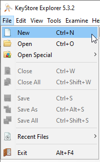 -
Select JKS.
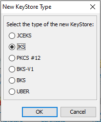 -
Save your keystore. When prompted to set a password, click OK without entering anything if you do not wish to set up a password.
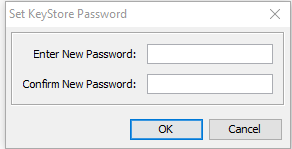 -
Select Tools > Generate Key Pair. The Generate Key Pair window pops up.
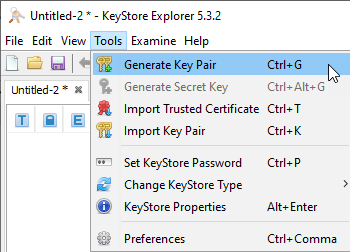 -
Leave the default algorithm selection as is: RSA with key size 2,048.
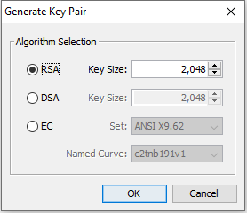 -
Click OK. The Generate Key Pair Certificate window pops up.
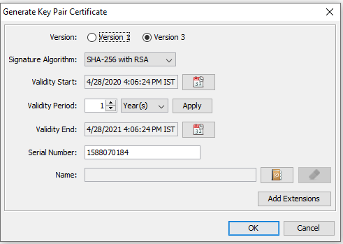 -
Leave the default values as is.
-
Click the Edit name icon next to the Name field. The Name window pops up.
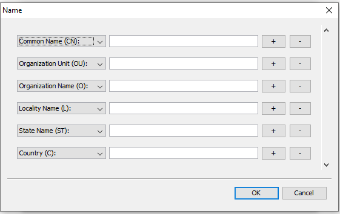 -
Fill in the fields as follows:
-
In the Common Name (CN): field, provide your
fspIdname previously assigned by the Hub. -
In the Organization Unit (OU): field, provide the name of your organization unit, for example, Payments.
-
In the Organization Name (O): field, provide the name of your organization.
-
In the Locality Name (L): field, provide the city where the organization is located.
-
In the State Name (ST): field, provide the state where the organization is located.
-
In the Country (C): field, provide the country where the organization is located.
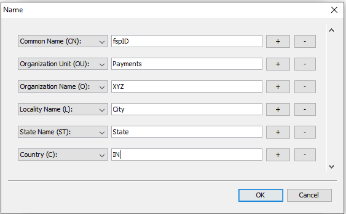
-
-
Click OK.
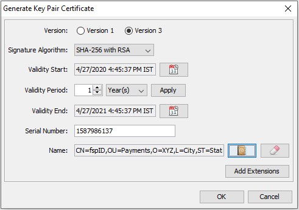 -
Back on the Generate Key Pair Certificate window, click OK. The New Key Pair Entry Alias window pops up.
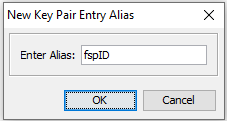 -
Leave the alias value as is.
-
Click OK. The New Key Pair Entry Password window pops up.
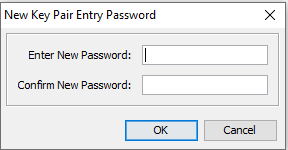 -
Click OK without specifying a password. You have successfully generated your key pair.
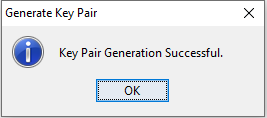
Then, create your "wrapped" public key (this is what we call the JWS certificate):
-
Right-click the key pair.
-
Select Export Certificate Chain. The Export Certificate Chain window pops up.
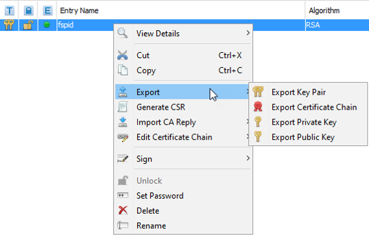 -
Leave the default values as is, that is, Export Length is Head Only, and Export Format is X.509.
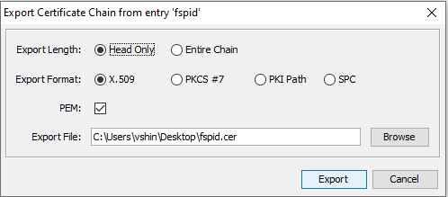 -
Ensure that the PEM checkbox is selected.
-
Specify where you want to download the certificate chain. Ensure that the file extension is
.pem. -
Click Export. You have successfully exported your certificate chain.
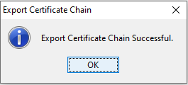